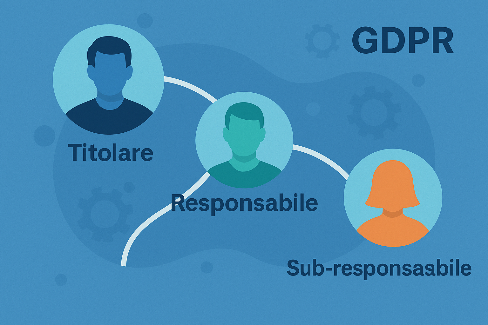

Differenza tra titolare, responsabile e sub-responsabile nel GDPR
Pubblicato il 16 ottobre 2025
Uno dei punti chiave del Regolamento Europeo 2016/679 (GDPR) è la chiara distinzione dei ruoli coinvolti nel trattamento dei dati personali. Comprendere le differenze tra titolare, responsabile e sub-responsabile è fondamentale per gestire correttamente gli obblighi normativi e contrattuali.
1. Chi è il Titolare del trattamento
Il Titolare è la persona fisica o giuridica che determina le finalità e i mezzi del trattamento dei dati personali. È il soggetto principale che decide “perché” e “come” i dati vengono trattati. Esempi comuni: un’azienda, un ente pubblico, o un professionista che raccoglie dati dei propri clienti.
2. Chi è il Responsabile del trattamento
Il Responsabile è il soggetto esterno che tratta dati personali per conto del titolare, in base a un contratto o altro atto giuridico. Esempio: un fornitore cloud o una società di marketing che gestisce campagne per conto di un cliente.
Il contratto deve specificare le istruzioni del titolare, le misure di sicurezza e la durata del trattamento. La mancata formalizzazione di questo rapporto è una delle violazioni più frequenti del GDPR.
3. Il ruolo del Sub-responsabile
Il Sub-responsabile è un soggetto scelto dal responsabile per svolgere parte delle attività di trattamento. Può essere incaricato solo previa autorizzazione del titolare. Esempio: un’azienda di hosting scelta dal fornitore IT del titolare.
4. Come PrivacyFlow rappresenta i ruoli GDPR
All’interno dei modelli e diagrammi generati da PrivacyFlow, i ruoli vengono visualizzati in modo chiaro e codificato:
- Titolare → soggetti che determinano le finalità;
- Responsabile → fornitori o partner che trattano dati per conto del titolare;
- Sub-responsabile → servizi delegati dal responsabile.
Con i comandi privacy-flow compose e privacy-flow render è possibile generare automaticamente report e diagrammi che visualizzano queste relazioni, semplificando la comprensione dei ruoli e dei flussi di dati.
5. Perché questa distinzione è cruciale
Una corretta identificazione dei ruoli consente di:
- dimostrare la conformità (principio di accountability);
- evitare sovrapposizioni di responsabilità;
- prevenire violazioni contrattuali tra titolare e responsabile.
“Chiarezza sui ruoli = chiarezza sulle responsabilità. PrivacyFlow aiuta a rappresentare visivamente questa distinzione, integrandola nei processi di audit e documentazione.”